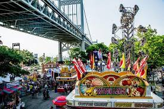
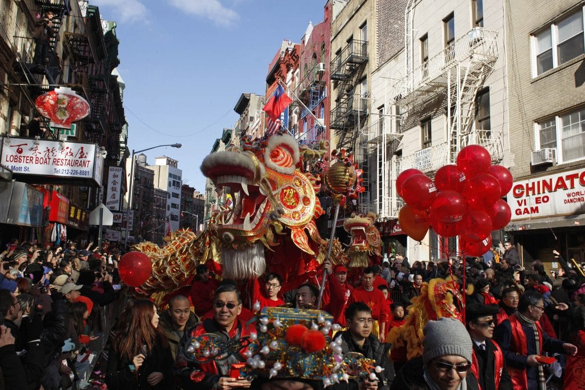

Broadway and the Theater District are synonymous with world-class
theater productions. Located in Midtown Manhattan, this area is home
to numerous theaters showcasing everything from blockbuster musicals
to cutting-edge plays. It's the epicenter of live theatrical
entertainment in the United States.
The Museum of Modern Art (MoMA)
The Museum of Modern Art (MoMA) is one of the foremost museums of
modern and contemporary art in the world. Situated in Midtown
Manhattan, MoMA's collection includes works by iconic artists such
as Van Gogh, Picasso, Warhol, and Pollock, making it a must-visit
for art enthusiasts.

Queens Astoria Carnival
The Astoria Park Carnival, held in Astoria, Queens, is a vibrant
celebration that brings together the local community for fun and
entertainment. It's a perfect opportunity for families and friends
to enjoy the beautiful park setting while experiencing the diverse
flavors and traditions that Queens has to offer.
Downtown Puerto Rican Day Parade
The Puerto Rican Day Parade, held annually along Fifth Avenue,
celebrates Puerto Rican culture and heritage. It features lively
music, dance performances, and colorful floats, drawing participants
and spectators from all over the world.

Chinese New Year Parade
The Chinese New Year Parade, held in Chinatown, Manhattan, is a
vibrant celebration featuring colorful floats, lion dances, and
fireworks. This event marks the Lunar New Year and showcases
traditional Chinese culture, including music, dance, and food.